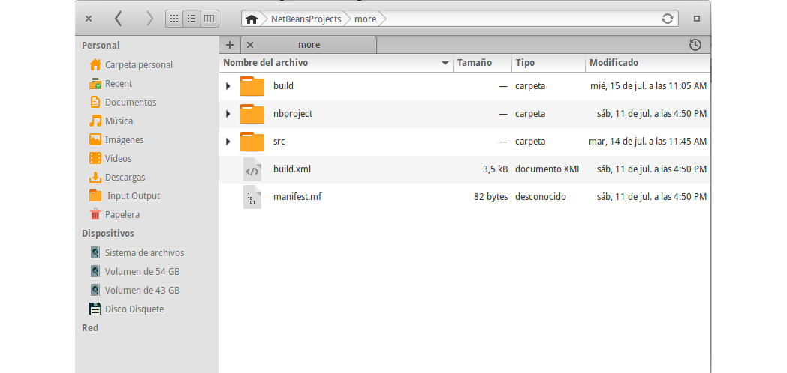
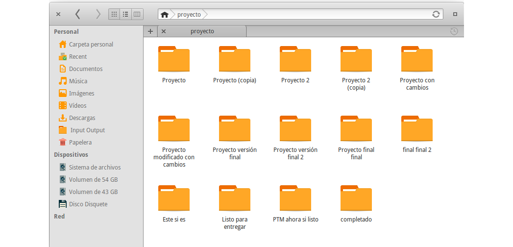
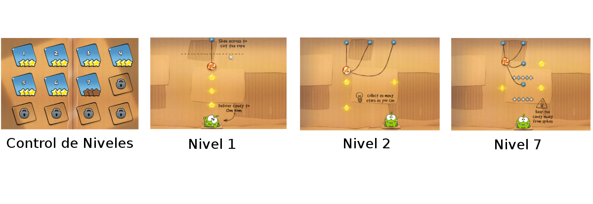
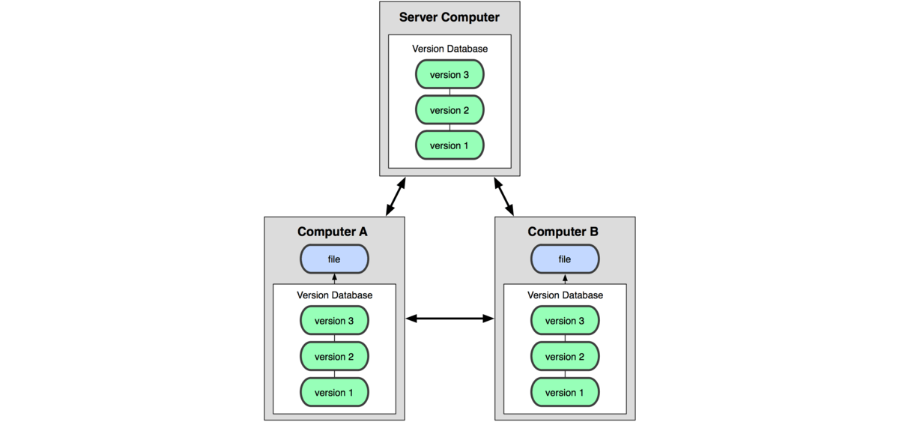
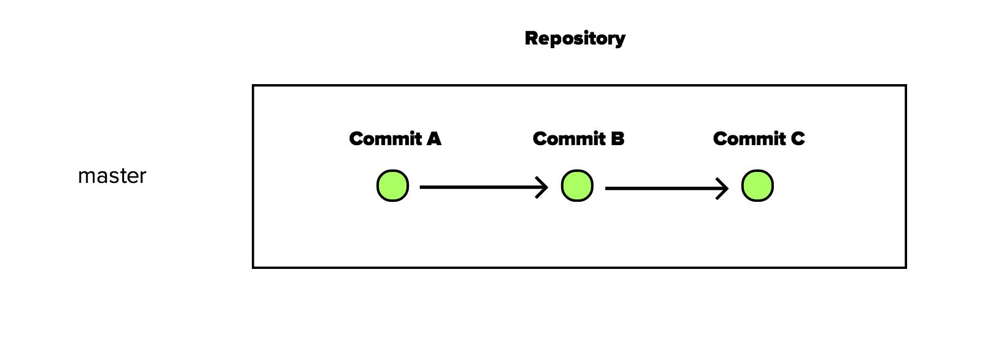
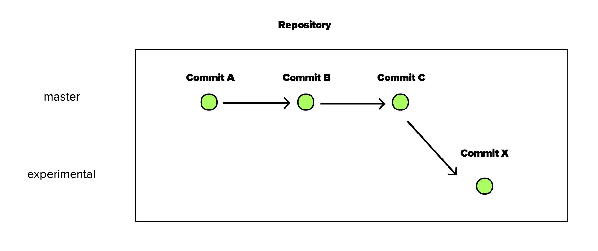
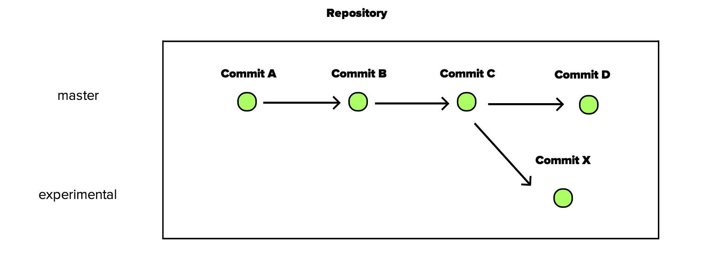
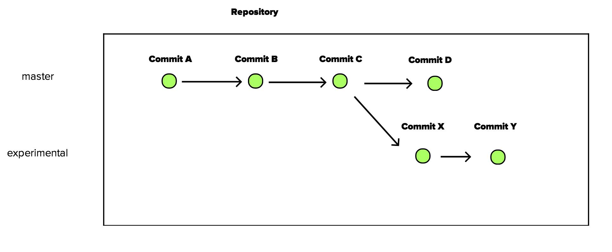
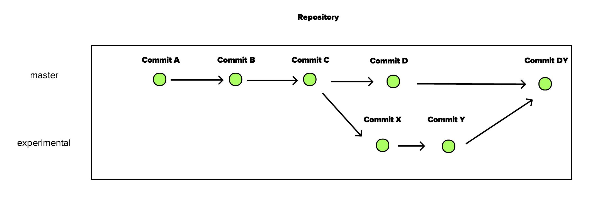

Control de Versiones con Git y Github
¿Por qué usar control de versiones?
¿Por qué usar control de versiones?
¿Qué es control de versiones?
Control de versiones
El control de versiones es un sistema que registra los cambios realizados sobre un archivo o conjunto de archivos a lo largo del tiempo, de modo que puedas recuperar versiones específicas más adelante.
Sistemas de control de versiones distribuidos
Git
- Velocidad
- Diseño sencillo
- Fuerte apoyo al desarrollo no lineal (miles de ramas paralelas)
- Completamente distribuido
- Capaz de manejar grandes proyectos (como el núcleo de Linux) de manera eficiente
Instantaneas de Git

Flujo de Git

Github

Instalación
http://git-scm.com/downloadsConfiguración
git config --global user.name "Tu nombre"
git config --global user.email "tuemail@ejemplo.com"
Antes de empezar
- ls
- mkdir CARPETA
- cd CARPETA
- cd ../
- touch ARCHIVO
Primer repositorio
- mkdir hello-world
- cd hello-world
Inicialización
Para iniciar un repositorio git, nos ubicamos en la carpeta del proyecto, y ejecutamos el siguiente comando:
git init
Status
Determina que archivos están en que estado dentro del repositorio.
git status
Añadiendo archivos al repositorio
Creamos un archivo llamado readme.txt. Después de verificar el status (lo cual no es obligatorio) agregamos seguimiento al archivo dentro del repositorio.
- git status
- git add readme.txt
Con esto los archivos quedan en el "stage", como un archivo preparado para ser agregado al repo.
Agregando al repositorio
Una vez añadido el archivo podemos integrarlo en el repositorio. Para esto ejecutamos el siguiente comando:
git commit -m "Mensaje del commit"
Creando ramas
Las ramas permiten crear variaciones del repositorio original, sin afectarlo inicialmente, y posteriormente, combinar sus cambios. Hay dos maneras de crear una rama nueva
La manera original:
- git branch nueva_rama
- git checkout nueva_rama
La manera para perezosos (mi favorita :$ )
- git checkout -b nueva_rama
Ramas
Ramas
Ramas
Ramas
Ramas
Volviendo al ejemplo
- Creamos un nuevo archivo de texto readme2.txt con cualquier contenido.
- git add .
- git commit -m "MENSAJE"
Integrando cambios en la rama original
Una vez consideramos que los cambios en la rama secundaria estan listos para hacer parte de la rama principal, los mezclamos:
- git checkout master
- git merge nueva_rama
Github
Crea una cuenta en github entrando a https://github.com/.
git config --global user.username USERNAME
Agregando nuestro repo a github
En la barra superior de github, hacemos clic en el + para crear un nuevo repositorio.
- git remote add origin URLFROMGITHUB
- git push origin master
Cambios en github
Github mantiene el flujo de git. Sin embargo, estaremos trabajando desde un repositorio local a uno remoto, lo cual nos obliga a realizar algunos cambios. (Imagen para llenar la diapositiva)
Obtener la última versión
Un repositorio en github puede tener diferentes copias locales. Si una de esas copias modifica el repositorio, las demas copias estarán desactualizadas hasta que hagamos un pull.
git pull origin master
Flujo común
- Realizar modificaciones
- git add .
- git commit -m "Mensaje"
Enviar al repositorio remoto
Para enviar al repositorio remoto, existe el push
git push origin master
Trabajo colaborativo (This is github)
El trabajo colaborativo en github puede realizarse de 2 maneras:
- Dando permisos de acceso al repositorio a todos los involucrados
- Teniendo un repositorio "padre", el cual puede ser copiado por los demás para realizar sus cambios. (Lo llamaremos método fork)
¿Que es un fork?
Es una copia exacta del repositorio original
Método fork
- Alguien crea un repositorio
- Las demás personas que deseen colaborar realizan un fork
- Cada persona realiza cambios sobre su fork
- Al considerar que los cambios deberian integrarse en el repositorio original, se envia un pull request
- Si el creador admite el pull request, los cambios se integran al proyecto original
Forkear un repositorio
Forkear es tan sencillo, como hacer clic en el botón fork en la esquina superior derecha de un repositorio.
Desde tu cuenta, realiza un fork del siguiente repositorio:
https://github.com/GersonLazaro/charla-githubClonar el repositorio
Clonar un repositorio, te crea una copia local en tu equipo del repo remoto en github. En la parte inferior derecha del repositorio en github estan los links para clonar.
git clone LINK_PARA_CLONAR_EL_REPO
Añadir el repositorio padre
Esto es necesario para poder obtener los cambios que se hagan no solo en el fork, sino en el repo original.
- git remote add upstream https://github.com/GersonLazaro/charla-github.git
- git fetch upstream
Actualizar desde el padre
Cada vez que quieras actualizar los cambios hechos en el padre (se recomienda hacerlo antes de hacer commits):
- git fetch upstream
- git merge upstream/master
Trabaja en el repo
- git checkout -b cambios
- Crea un archivo TUCODIGO.md (reemplaza TUCODIGO por 115...) que contenga tu nombre, código, y semestre.
- git add .
- git commit -m "Añadido TUCODIGO"
- git push origin cambios
Pull request
Ahora estas listo para pedir que tus cambios se integren en la rama principal. Desde la interfaz de github, solicita un pull request a la rama master.
Otras funcionalidades de Github
Gists
Algunas veces no tenemos un proyecto completo, sino simples snippets o fragmentos, que de cualquier manera nos gustaria mantener en control de versiones. Para esto, existe gist.
Puedes utilizarlo, entrando en https://gist.github.com/
Issues
Cada repositorio cuenta en la barra lateral derecha con una opción llamada "issues". Desde aqui se pueden reportar bugs, nuevas funcionalidades, organizar tareas, indicar nuevas caracteristicas, etc.
Wiki
También en la barra lateral derecha encontramos la wiki, la cual nos permite crear una wiki *no me digas* sobre el proyecto.
Alternativas a Github que usan git

En nuestro festival no hay cerveza, ¡pero hay camisetas!
hacktoberfest.digitalocean.com¿Muchas gracias?
¿Preguntas? ¿Quejas? ¿Reclamos? ¿Limonaditas de mango?
Contacto:
- Sitio web: www.gersonlazaro.com
- Email: gersonlazaro@acm.org
- Github: GersonLazaro
- Twitter: @GersonLazaroC